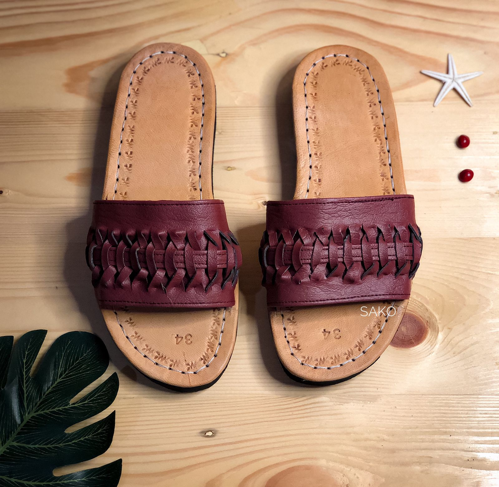

Ulat Mogi I
Sandal model Bali Ulat Mogi 1 adalah sandal yang terinspirasi dari keindahan alam Bali dan keunikan budaya lokal. Desainnya menggabungkan elemen tradisional dengan sentuhan modern, menciptakan gaya yang unik dan menarik.
